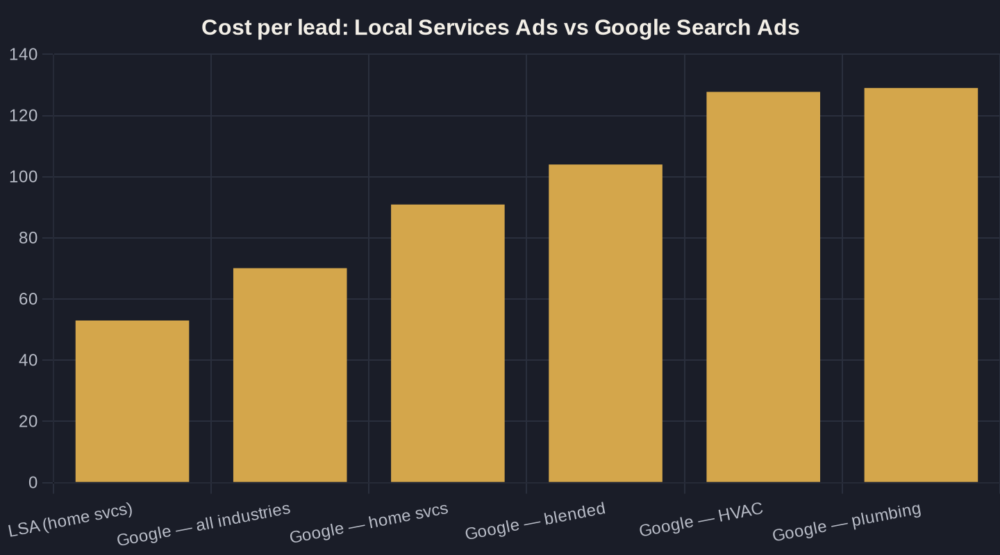

Local Services Ads vs Google Ads: Which Wins for Your Business?
Two Google ad products, similar names, opposite billing. One charges per lead, one per click. Here is how they compare on the only number that matters: cost per booked job.
Key takeaways
- LSAs bill per valid lead; Google Search Ads bill per click. That single difference drives the cost comparison.
- On raw cost per lead, LSAs win: ~$53 vs $70.11 blended Google Ads, and far below $127.74 (HVAC) and $129.02 (plumbing) in the trades.
- Google Search Ads win on control — keywords, ad copy, landing pages, and service lines LSAs cannot target.
- The deciding number is cost per booked job, not cost per lead; only 61% of callers reach a person, so phone handling caps ROI on either channel.
- Most local owners should run both: LSAs first for cheap, high-trust leads, Search Ads on top for control and volume.
Local Services Ads vs Google Ads: the difference that changes the math
If you run a local service business and you have shopped for ads, you have hit two products with confusingly similar names. Standard Google Search Ads put a text ad above the organic results when someone searches. Local Services Ads (LSAs) sit even higher, at the very top, with a green Google Guaranteed or Google Screened badge, your star rating, and a phone number. They look alike. They bill in opposite directions.
The whole Local Services Ads vs Google Ads decision comes down to one line. With LSAs, Google charges you per valid lead, not per click — you only pay when a customer makes a real first contact by call, message, voicemail, or booking request, and invalid or junk leads are not billed. Standard Search Ads charge you every time someone clicks, whether they call, bounce, or were never going to buy. Pay-per-lead versus pay-per-click is the difference that changes your Owner's Math — tracing what $1 of marketing actually returns.
What you actually pay: cost per lead, side by side
Start with the blended benchmark. Across 16,446 US search campaigns, the average Google Ads cost per lead is $70.11, at a 7.52% conversion rate and a $5.26 cost per click. That is every industry averaged together. Local service trades run hotter than the average.
In home services specifically, Google Search Ads average $90.92 per lead, climbing to $127.74 for HVAC and $129.02 for plumbing. Cost per lead rose for 69% of home-services advertisers year over year. Those are clicks turned into leads on your own landing page and phone line, and the quality of that conversion is on you, not Google.
Now the LSA side. In a benchmark of $6.72M in Local Services Ads spend across 888 contractors and 126,650 leads, LSAs averaged $53 per lead — 49% cheaper than the $104 blended Google Ads cost per lead and 64% cheaper than non-branded Google Ads at $149. Cost per paying customer told the same story: $233 with LSAs versus $472 with blended Google Ads. On raw cost per lead, LSAs win, and it is not close. If budget is your first question, start with the local budget guide.
Where Local Services Ads win
Cheap leads are only half of it. LSAs carry the Google Guaranteed badge, and that matters because 97% of consumers read online reviews for local businesses and 71% read them on Google. The badge plus your star rating is a trust signal a plain text ad does not carry, and it sits at the very top of the page where buying intent is highest.
The pay-per-lead model also caps a specific risk in the Local Services Ads vs Google Ads tradeoff: you do not pay for the curiosity click that was never going to convert. For a busy owner who cannot babysit a campaign, that is a cleaner deal. Google qualifies the contact before it bills you, and you can dispute leads that are not real.
- You pay per valid lead, not per click
- Top-of-page placement, above the text ads
- Google Guaranteed or Screened badge plus star rating
- Disputable junk leads
Where Google Ads still wins
LSAs are a blunt instrument. You pick service categories and a service area, and Google decides who sees you. You cannot choose keywords, write the ad, send traffic to a page you control, or push a promotion for one specific service line. Standard Google Search Ads give you every one of those levers.
That control is the entire point. With Search Ads you decide exactly which searches you appear for and which you block — see choosing and blocking the right local keywords — and you send the click to a page built to convert rather than a generic profile. A landing page actually built for the offer is where a pricier click can still beat a cheaper LSA lead on cost per booked job. LSAs also cover only specific eligible categories; if your service is not one of them, Search Ads are your front door.
| Channel / segment | Billing model | Cost per lead | Cost per paying customer |
|---|---|---|---|
| Local Services Ads — home services | Pay per valid lead | $53 | $233 |
| Google Ads — all industries (blended) | Pay per click | $70.11 | — |
| Google Ads — home services (search avg) | Pay per click | $90.92 | — |
| Google Ads — blended (contractor benchmark) | Pay per click | $104 | $472 |
| Google Ads — HVAC | Pay per click | $127.74 | — |
| Google Ads — plumbing | Pay per click | $129.02 | — |

The number that decides it: cost per booked job
Cost per lead is the headline; cost per booked job is the truth. A $53 LSA lead that nobody answers is more expensive than a $90 Google Ads lead you close on the call. This is the heart of Owner's Math: trace the dollar past the lead to the booked job and the revenue, which is the only place the Local Services Ads vs Google Ads question is honestly settled.
Phone handling is where most of that value leaks. Across more than 60 million calls, 37% of phone leads convert during the call, but only 61% of callers actually reach a person. Nearly four in ten callers never get a human. LSAs bill on calls, messages, and booking requests, so they push contacts to the bottom of the funnel — but if your front desk misses the call, you paid for a lead and booked nothing, on either channel. Fix the phone before you argue about the ad product.
How to run both (most owners should)
For most local service businesses, this is not either/or. Turn LSAs on first: they are the cheapest, highest-trust leads on the page and the lowest-effort to run. Then layer Google Search Ads on top to own the searches LSAs cannot target, control the landing experience, and scale past the lead volume LSAs cap out at.
Run them together, tag every call to its source, and compare on one metric: cost per booked job, not cost per click or even cost per lead. The full sequencing — campaign structure, budget split, and tracking — lives in the complete local Google Ads playbook.
Which wins for your business?
If you want the lowest cost per lead with the least setup, LSAs win: $53 versus $70 to $129 per lead is hard to argue with, and the badge does real work on a skeptical buyer. If you need control, specific service lines, or volume beyond what LSAs deliver, Google Search Ads win. Most owners should run both and let cost per booked job pick the budget split.
The honest answer is that the ad product matters less than the math behind it. If you want your own numbers run — what a lead costs you today, what a booked job is worth, and which channel gets you there cheaper — that is the conversation worth having. Reply to the newsletter or book a call, and we will trace your dollar from impression to booked job.
Sources
- Google Local Services Help — How leads work (2025)
- WordStream (LOCALiQ) — Google Ads Benchmarks 2025 (2025)
- LOCALiQ — 2025 Search Ad Benchmarks for Home Services (2025)
- SearchLight Digital — Google Local Service Ads Cost Per Lead by Trade (2026)
- Invoca — Call Conversion Industry Benchmarks Report 2025 (2025)
- BrightLocal — Local Consumer Review Survey (2026)
Want this run on your numbers?
Book a call and we will run the Owner's Math on your business — clear numbers, a straight plan, no pitch. Or read the free Playbook first.